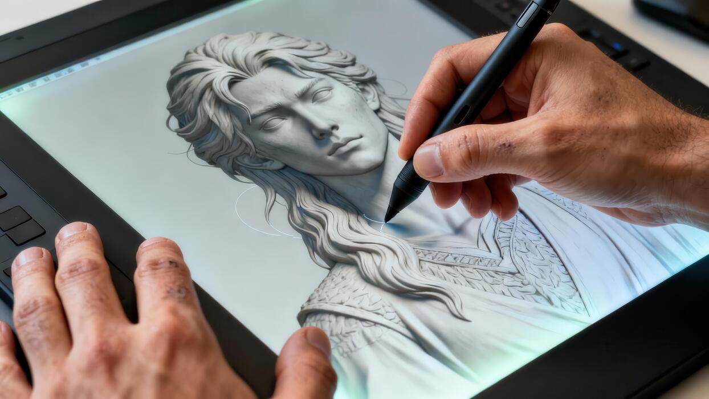
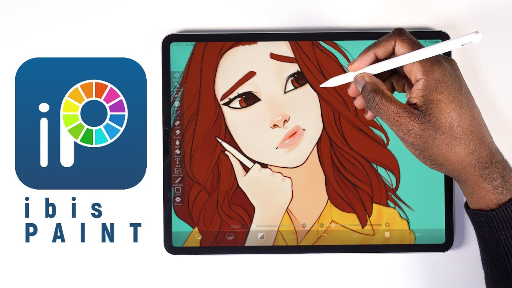
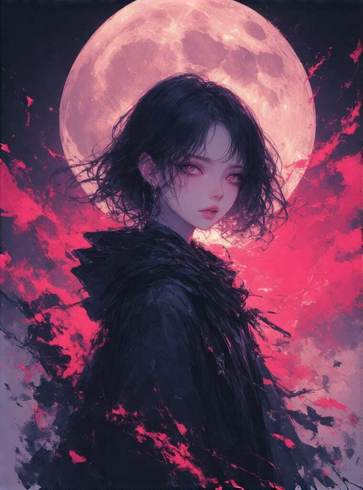
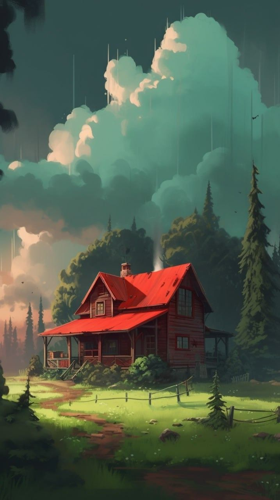
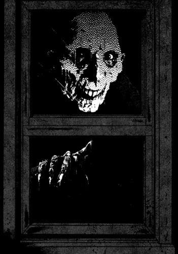
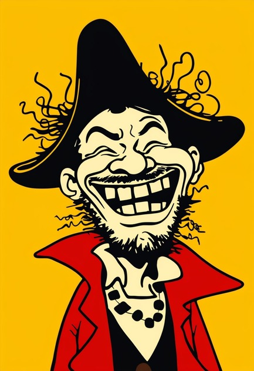

Drawing in the Digital Age
An overview of Digital Drawing
Introduction
What Is Digital Drawing?
Digital drawing is a way of creating art using electronic devices like a tablet, computer, or smartphone instead of using paper and pencils. Artists use a stylus or digital pen together with drawing apps to create pictures, sketches, paintings, and designs. These apps have many different brushes, colours, and tools that make drawing fun and easy.
One of the best things about digital drawing is that it is easy to fix mistakes. If you make an error, you can simply undo it without starting over. You can also use layers to separate different parts of your drawing, making it easier to edit and improve your artwork. Digital drawings are also easy to save, share online, or print whenever you need them.
Digital drawing is used in many areas such as animation, game design, graphic design, and advertising. Many students and artists enjoy digital drawing because it gives them more creative freedom and helps them learn new skills while using modern technology.


How To Get Started?
There are many ways to start learning digital drawing. In my opinion, it is easier to learn with digital tools than with traditional paper and pencil because it is easier to fix mistakes and experiment with different techniques.
If you do not have a Wacom tablet, you can start by using a smartphone or tablet with a drawing app. I recommend using Ibis Paint X. You can draw with a stylus, or simply use your finger if you do not have one. Spend some time getting familiar with the app and try drawing anything to warm up.
For beginners who are still learning how to draw, tracing images can be a good exercise. Tracing helps you understand basic shapes, proportions, anatomy, poses, and perspective. It also builds confidence and helps you learn how experienced artists construct their drawings before you start drawing freehand.
Techniques
Learning Techniques
Digital drawing is a skill that improves with regular practice. Beginners should start by learning simple shapes such as circles, squares, and triangles before moving on to more detailed drawings. Breaking complex objects into basic shapes makes them easier to understand and draw accurately.
Using references is also an important learning technique. Looking at photos or real-life objects helps artists understand proportions, lighting, and perspective while developing their own style over time.
Process
Visualise
Think about what you want to draw or what you are looking at onto your canvas, visualise how big it should be, which part you will be drawing. Would be better if you would take a picture and put it in your canvas for beginners for tracing
Line Art
Line art is the process of creating clean outlines for your drawing after completing the initial sketch. It defines the shape and details of your artwork before colours are added.
-Tips-
Try drawing with smooth, confident strokes instead of many short, sketchy lines. Varying the thickness of your lines can also make your artwork look more dynamic and professional.
Coloring
After finishing your line art, you can begin adding colours. Start with flat colours to fill in areas.
Give your creation a color of your choosing, you can use color combination like: Analogous, Complementry, split-complementry, Triadic, Warm, Cool or Monochromatic; there are many more color combination too. Give it a try!!
Shadings
After finishing your coloring, do shading to make your art pop and give it more life.
Now comes the hard part, to understand shading you gotta understand your drawing's shape, visualise your drawing as 3D, split different parts into shape and shade accordingly.
-Tips-
Practice shading shapes before hand first, understand how each shape's shadow works, then apply it to your drawing.
Practicing Tips
Improving your digital drawing skills takes time and patience. Here are a few tips to help you progress:
- Practice regularly, even if it's only for 15–20 minutes a day.
- Use layers to keep your sketch, line art, and colours organised.
- Study reference images to understand shapes and proportions.
- Experiment with different brushes to discover what works best for your style.
- Don't be afraid to make mistakes—every drawing is an opportunity to learn.
Quiz
8 questions regarding the Process will be asked, Process will be hidden, so no referring.
Not submitted
Genre & Style
What is Genre & Style in digital drawing?
Digital art offers many different genres and styles, each with its own unique look and techniques. Some artists enjoy creating realistic portraits, while others prefer anime,
pixel art, cartoons, or fantasy illustrations. There is no right or wrong style, and many artists experiment with different genres before developing their own artistic style.
Exploring different art styles helps beginners discover what they enjoy drawing while learning new techniques and gaining inspiration.
Below are some of the most popular digital art styles and what makes each one unique.

Anime
Anime
Anime is one of the most popular digital art styles. It is recognised by expressive characters, colourful hair and clean line art.
Characteristics
- Stylised
- Bright colours
- Clean outlines
- Cel shading
Realism
Realism
Realism aims to make artwork look as close to real life as possible. Artists carefully study lighting, anatomy, colours and textures to create believable drawings and paintings.
Characteristics
- Accurate proportions
- Detailed textures
- Natural lighting
- Realistic colours

Landscape
Landscape
Landscape art focuses on natural scenery such as mountains, forests, rivers and skies. It often emphasises lighting, atmosphere and perspective to create beautiful environments.
Characteristics
- Nature and scenery
- Mountains, forests, oceans, cities
- Strong use of perspective
- Added with of realism

Horror
Horror
Horror art is designed to create fear, mystery or discomfort. Artists often use dark colours, eerie lighting and distorted shapes to build a frightening atmosphere..
Characteristics
- Dark colour palette
- Creepy atmosphere
- Strong shadows
- Distorted creatures

Cartoon
Cartoon
Cartoon art uses simple shapes, bold outlines and exaggerated expressions. It is commonly used in children's books, animated shows, comics and humorous illustrations.
Characteristics
- Simple shapes
- Bold outlines
- Exaggerated expressions
- Bright colours
Canvas
Drawing Canvas
Here you will find a 100 x 100 pixel canvas to practice digital drawing, it may not be easy to use since it was simple coding
Give it a try and draw what you want.
Select the color picker to choose your color.
Select the Erase button to erase each pixel.
Lastly Select Erase All to clear out the canvas.
Game
Test your observation and pixel art skills by recreating the image shown on the right.
You have 150 seconds to accurately copy each pattern onto the blank 10 × 10 canvas.
Complete all four levels before the timer runs out to win! You may use the Eyedropper tool to get the
color from the image.
Level: 1 / 4
Time: 150
Get Ready!